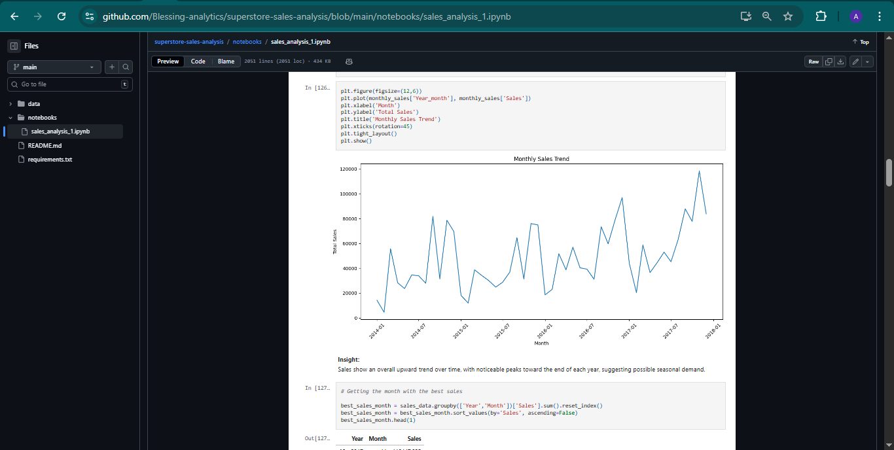
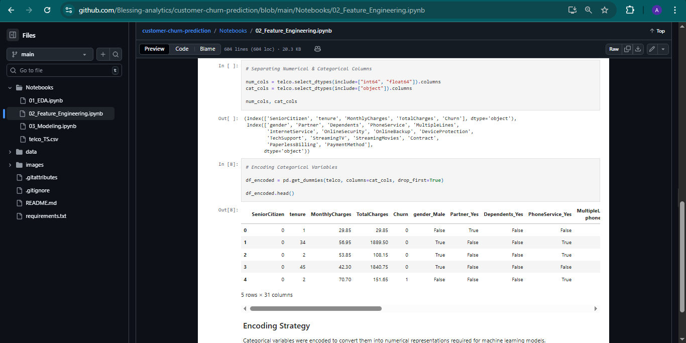
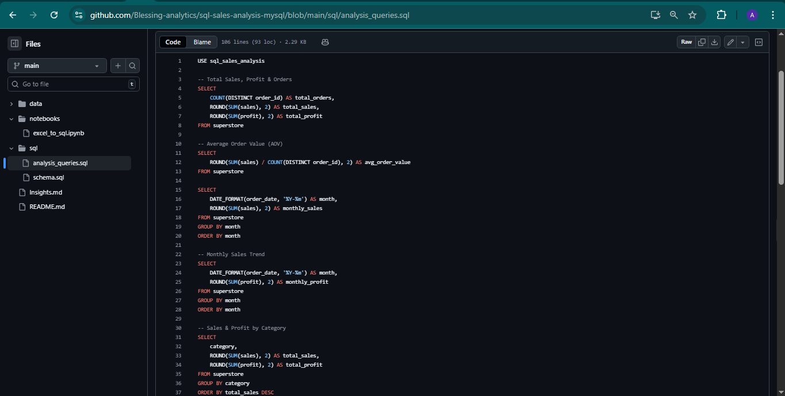

Projects
Sales Analysis (Python)
Analyzed 10,000+ retail sales records to identify revenue trends, top-performing products, and peak sales periods.
- Improved visibility into monthly revenue performance and category contribution
- Identified top 20% products contributing majority of revenue
Customer Segmentation (RFM Analysis)

Segmented customers using Recency, Frequency, and Monetary metrics to support targeted marketing decisions.
- Classified customers into loyal, high-value, and at-risk segments
- Enabled data-driven retention and upselling strategies
Customer Churn Prediction
Analyzed customer behavior data and built churn prediction models to identify factors driving customer attrition.
- Compared churned vs retained customers across tenure and usage metrics
- Highlighted key churn drivers to support retention strategies
SQL Sales Analysis (MySQL)
Performed structured data analysis using complex SQL queries to answer key business questions.
- Used JOINs, subqueries, and aggregations for reporting
- Generated insights on sales performance and customer activity